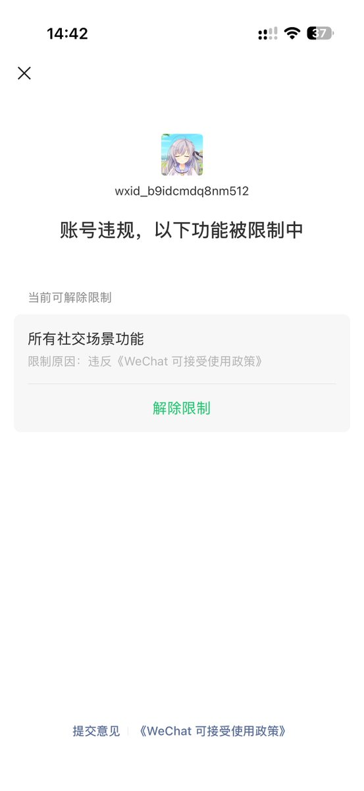

青空 しょな
@seikuushona
@mizorewww 我的每个微信号现在都处于需要二次实名 + 手机号验证的状态，换绑 +86 以外的手机号还不行。
不得已，割舍掉了之前的账户，用 +852 的手机号注册了个新的，没再实名过，转账都请求对方用支付宝。
+1 还不行，注册完迅速封号。

雨夹雪❄️ | 名古屋萌脸超可爱!
@mizorewww
微信简直是划时代的产物
我他妈一共就加了俩好友，有一个是我自己
就他妈封号了 https://t.co/HMN0pDjMf9